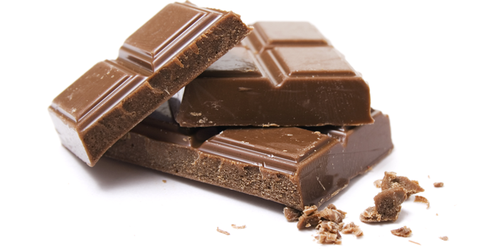
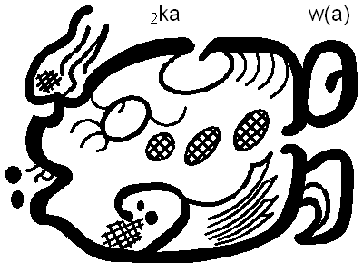

Čokolade.com je websajt na kome možete kupiti savakakve vrste čokolada napravljene sa ljubavlju od strane razinh proizvodjača širom sveta.
Čokolade.com je websajt na kome možete kupiti savakakve vrste čokolada napravljene sa ljubavlju od strane razinh proizvodjača širom sveta.
je poslastičarski proizvod koji se pravi od kakaoa, mleka, masti, zaslađivača i drugih dodataka. Cenovnik
Kakao su kultivisale mnoge kulture više od tri milenijuma u Mezoamerici. Najranija evidencija upotrebe čokoladnih pića potiče od Mokaja (Meksiko i Gvatemala) iz perioda oko 1900 p. n. e. Zapravo, većina mezoameričkih naroda je koristila čokoladna pića, uključujući Maje i Asteke, koji su pravili piće poznato kao xocolātl, što je navatlska reč sa značenjem „gorka voda”. Seme kakao drveta ima intezivno gorak ukus i mora biti fermentisano da bi se razvila aroma. Nakon fermentacije, zrna se suše, čiste, i peku. Ljuska se uklanja da bi se proizvela kakao jezgra, koja se zatim melju do kakao mase, neobrađene čokolade u gruboj formi. Kad se kakao masa utečni zagrevanjem, nastaje čokoladna tečnost. Tečnost se isto tako može ohladiti i obraditi u dve komponente: kakao čvrstu masu i kakao buter. Čokolada za kuvanje, koje je naziva i gorkom čokoladom, sadrči kakao čvrstu materiju i kakao buter u varirajućim proporcijama, bez dodatog šećera. Najveći deo čokolade koja se konzumira u današnje vreme je u formi slatke čokolade, kombinacije kakao čvrste mase, kakao butera ili dodatog biljnog ulja, i šećera. Mlečna čokolada je slatka čokolada koja dodatno sadrži mleko u prahu ili kondenzovano mleko. Bela čokolada sadrži kakao buter, šećer, i mleko, ali ne i kakao čvrstu masu.
Reč „čokolada” je ušla u upotrebu iz španskog oko 1600. godine. Reč je ušla u španski iz navatlske reči chocolātl, jezika Asteka, dok je precizna etimologija navatlske reči predmet debata. Jedna predložena etimologija izvodi je iz reči chicolatl, sa značenjem „tučeno piće”, koja je mogla da bude izvedena iz naziva štapa za stvaranje pene, chicoli. Termin „čokoladni čip” je prvi put korišten 1940. Termin „čokolader”, za osobu koja pravi čokoladne proizvode je u upotrebi od 1888.
Hvala Discovery Chanel-u na video snimku.